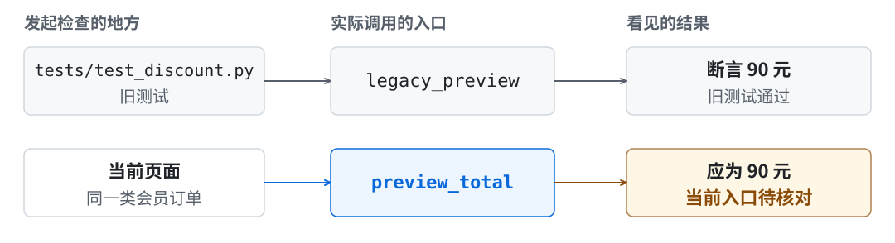

上一次的经验，这次还能照着用吗
你让 agent 查一项会员活动。100 元的订单，预览页应显示 90 元。它从旧经验找到一条回归测试，跑完是绿的。你打开预览页，页面仍显示 100 元。
这次测试确实通过了。先看它把订单交给了哪个函数，再看看今天的页面用的是谁。
测试给了 90，页面为什么是 100？
这次活动另有一条会员折扣，和第四章的普通价改动是两个任务。这里按源码和工具流程推演。tests/test_discount.py 直接调用旧函数 legacy_preview，断言会员的实付价为 90 元。当前页面拿着同一个会员和同一笔订单，却走的是 preview_total。

旧函数照样算出 90，整份测试也能以 0 退出。它没经过新入口，preview_total 返回 90 还是 100，在这份结果里没有答案。把测试改成从预览路由进入，断言页面实际给会员的价格，才能观察到那个 100。
我会把旧经验留下来，保住它指向的测试和当时适用的入口。新任务省的是重新查找的时间。等它真正决定要不要交付，得看今天的订单走过哪段代码。
开个新会话，经验以什么形式进来？
如果接着打开昨天的会话，可以在那份历史里找回昨天那次 Read。另开会话时，程序从绑定的 Markdown 记忆库挑材料。一条“查会员预览”的旧经验可以跨过去，昨天那次 Read 的原始回包仍要到原会话里找。
启动时，程序从项目、用户和知识库载入条目。同名条目也有各自的作用域。知识库中属于其他项目、未锁定的经验先被排掉，已过期的条目也不参与。有效条目少于 50 时提供正文；达到 50 时，普通正文容量变成 40 条，其余最多选 200 个标题或名称进索引。用户、反馈和锁定记录优先，保护项多时可以超过普通正文容量。
index = [] if small else _selectIndexEntries(validated, today, full)
text = buildMemorySection(full) + buildIndexSection([item.mem.title or item.mem.name for item in index])
def identities(items: Sequence[ValidatedMemory]) -> tuple[StartupMemoryEntry, ...]:
return tuple(StartupMemoryEntry(item.scope, item.mem.name, item.content_hash)
for item in items if item.scope is not None)
return StartupMemorySnapshot(text, identities(full), identities(index))这里的 text 给启动系统消息用，后两个值分别记住全文和索引里的条目身份。身份里还带着正文哈希，也就是从文件内容算出的标识。假如先生成文本，随后再去磁盘读取版本，中间恰好有人改了经验，程序就可能拿今天的版本号给昨天的文字盖章。用同一批条目完成这两件事，后面才能判断模型究竟已经读了哪一版。
把同一条“会员预览回归”放进两边的本地记忆库，细节都写成一份主题说明。Claude Code 开启自动记忆后，启动时最多读 MEMORY.md 的前 200 行或 25 KB，以先到的上限为准。用到这条经验才通过文件工具取主题正文。若存按条目数和优先级选正文和索引。小库直接带正文，可以省一次读取；落到索引的项则在用到时交给 MemoryRead，换取更小的启动上下文。启动时实际发出去的正文版本也记下来，稍后才知道本次任务需不需要再带一份。Claude Code 官方文档 · 自动记忆的索引与正文
旧经验正文还写着“从旧预览函数查起”，原文一个字没变。入口文件 pricing/preview.py 却已经换成新实现。程序比较的是另一份哈希：经验记录下来的来源版本和此刻读到的文件版本。
来源文件还能读，哈希却变了，这条经验标为 changed，仍能提供线索，同时提醒你复查。已超过有效期，或工作区内的来源文件读不到，自动召回会跳过。没有文件来源、无法比较哈希等情况也可能得到 ok。这个值只能回答此次来源检查发现了什么，入口调用方、配置或依赖变化还得自己追。查看来源检查
把旧经验带进这一问
用户发来“查一下会员折扣预览”。程序在消费这条排队输入时，先看输入 Hook 是否允许。允许后才有机会拿当前问题搜记忆。这一步取当前文字的词项，按作用域和来源先筛一遍，再给标题和正文里的匹配打分。搜到“会员预览回归”，只说明它值得打开。
- 默认
--memory-strategy startup提供启动材料。 - 选
--memory-strategy task时，还会按本次输入召回。首次已经提供过全文的条目按作用域和名称排除，补进来的材料最多两条、共 2400 字符。 - 交互任务启用
--memory-learning controlled时，当前输入优先走受控旧错检查。它也最多补两条、共 2400 字符，不过会挑选可复查的语义和操作经验，并核对启动时见到的具体版本。这是独立的学习选项，命令行默认关闭。--no-memory关闭自动记忆，评估模式也会设置它。
启动消息留在原处。确有相关条目时，程序让排队原文与补充材料在同一次提交中进入会话，补充另成一条后续 system。输入被挡住或没有召回文字时，不会追加这份补充。查看两条召回分支 · 查看输入与补充怎样提交
启动时，模型已经读过“会员预览回归”这条经验。它再次被搜到时，假如只改了预览代码，重发旧经验也说不清代码变了。要是改的是经验里的验收条件，省掉正文反而可能把新要求漏掉。下面把启动时的经验正文叫 M1，把它记录的来源文件版本叫 S1，看看程序怎样分开核对两份材料。
record = _record(entry, verdict)
if startup is not None:
same = bool(entry.contentDigest) and full_versions.get((entry.scope, entry.memory.name)) == entry.contentDigest
# 先按相关性选出目标，再决定是否隐藏重复正文。
# 复验警告对应当前源码。Markdown 没变时也可能有警告。
if same:
warning = f"\n{_CHANGED}" if verdict == "changed" else ""
source = f"；来源：{entry.memory.source}" if entry.memory.source else ""
record = (f"[{entry.scope}/{entry.memory.name}] {entry.memory.title or entry.memory.name}"
f"{source}"
f"\n同版本正文已在启动记忆提供；定位摘录（仅供查找）：{entry.memory.text[:120]}{warning}")
record = f"{record}\n记忆版本：{entry.contentDigest}"正文仍是 M1 时，same 成立，回给模型的是简短的定位摘录。假如磁盘上的预览代码已是 S2，verdict 仍是 changed，摘录后面会留着变化提醒。若有人改了经验的适用条件，正文变成 M2，即使名称相同也会走当前正文，能否放入请求还要看剩余预算。「旧正文可以少发一次，眼下的来源变化还要告诉模型。」
名字还一样，能不能直接省掉正文？现有用例换成分页经验来验证。一个用例在启动读过全文后再次召回，断言只给定位和检查提示，旧正文不用再发。另一个保留同名条目，把“第一页成功即可”改成“核对末页和总数”，再按同一主题召回。它断言补充用的是新版正文，原来那条只看第一页的条件没有再出现。查看同版摘录和改版重读的断言（项目回归测试）
拿到经验，怎么用它避免再错一次？
只见过标题，可以手动调用 MemoryRead。例如搜“预览”，同时找到“会员预览回归”和“导出预览格式”，先挑会员那条，再用完整标题查正文。工具先按名称或标题精确比对，找不到才按空白拆词查内容。默认最多列六条。命中一条会回正文，命中多条会给列表。自动召回的相关性排序和新鲜度判断在另一条路径上，手动读回的内容也该按现状核实。查看手动读取的匹配顺序
确认适用范围后，可用 MemoryWrite 保存经验。例如以“会员预览回归”为标题，把“预览走 preview_total 时，断言实际给会员显示的价格”写入项目记忆，并附上来源 pricing/preview.py。工具会筛查疑似凭据并为读得到的文件来源记录哈希。也可以用 delete: true 加标题或正文定位删除，只读兼容来源仍会保留。写入回执确认的是笔记保存下来。查看写入怎样确定范围和来源
经验已经找回来了，页面上那笔 100 元还缺一份经过当前入口的证据。先从路由读到 preview_total，再看测试能否把同一笔 100 元的会员订单送进去。受控召回给出的旧错检查提示会让模型把核对放进原有的 TodoWrite 清单，保留其余待办，然后使用最后一次相关修改之后的工具结果说明是否通过。跑不起来就标未验证；这回只改结算、与这条预览经验无关，就说明不适用。若历史只剩一句“检查通过”，沿原调用和它的回包核对。「报告会员价已修前，先找到最后一次相关修改之后、真正经过预览入口的结果。」
只改了一份配置，旧来源仍对得上
经验文档还是 M1，它指向的 pricing/preview.py 也没改。今天运维只改了一份活动配置，页面改从另一条插件路由计算价格。一条直接调用 preview_total 的用例仍然全绿。受控召回会给什么，交付前要查哪一项？
核对判断
若这条经验在启动时已给过全文，且本次命中并能放入预算，程序可以只给定位摘录。它跟踪的文件没变，此处不会提示来源变化。还要查当前页面实际走的插件路由，确认当前活动配置下会员订单显示多少。眼前的测试只走了 preview_total，针对页面旧错仍应标未验证。
这一章带走什么
旧测试跑绿了，先查它走的是哪个入口。旧函数仍能算出 90 元，今天的预览页却可能已经换了一条路。交付前，拿同一笔订单从实际页面入口再验一遍。
启动时给过哪一版经验，程序会记下来。再次搜到同一版，可以少发一遍全文。经验指向的代码有自己的版本，正文没改过，文件也可能早就变了。
这回终于测到了预览入口。要是经验还没保存，预览文件又被改了一次，刚才的通过回包还能给哪一版作证？
面经自测
你们项目里的长期记忆是怎样实现的？
网易 · 一面 · 面经原帖 · 题意转述
展开参考回答
短期记忆和长期记忆分别存在哪里，又在什么时候读出来？
小红书 · 一面 · 面经原帖 · 题意转述 可回看 第 2 章 第 13 章
展开参考回答
接回原会话时，我从它保存的消息记录里找当时的问题和工具结果。昨天那次 Read 的结果，是这场会话的一条消息。
另开新会话时，程序从绑定的 Markdown 记忆库挑条目，带上正文或供检索的索引。新会话能读到选中的经验；想知道文件今天怎么写，还要去读现在的文件。
记忆的文字一个字没改，为什么若存还提醒我重新查源码？
若存设计题
展开参考回答
启动时已经展开过同一条经验，什么时候还要再给模型看全文？
若存设计题
展开参考回答
MemoryRead 一次搜到多条记录，怎样找出要用的那条？
若存设计题
展开参考回答
过去踩过的会员价问题又改了一次，旧的通过记录还能给现在的结果作证吗？
若存设计题
展开参考回答
项目怎样把长期记忆里和当前问题相关的内容找回来？
字节跳动 · 一面 · 面经原帖 · 题意转述
展开参考回答
拿这一次用户输入和已有条目匹配，在预算内带入相关内容。看到旧经验后，先确认它讲的是当前项目、当前入口，再据此行动。